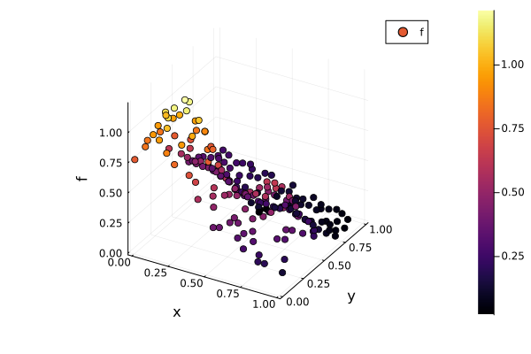
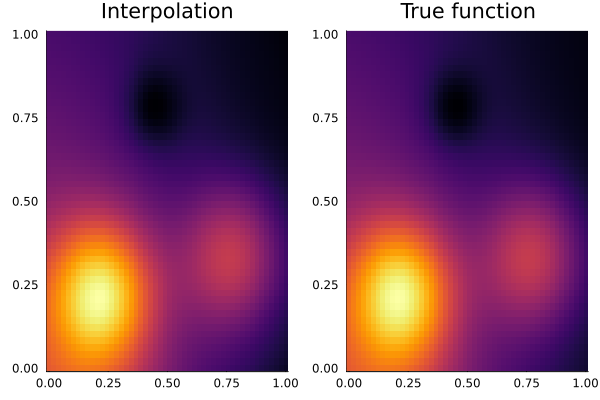
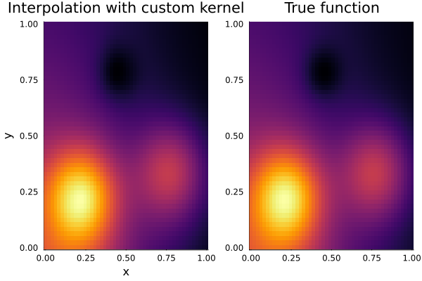
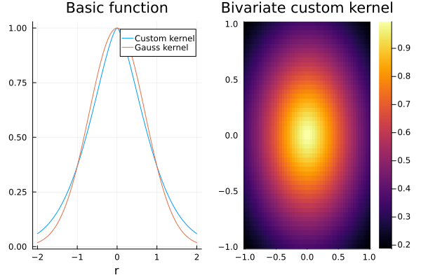

Classical interpolation
Kernel methods are well-suited to interpolate given function values, which are known at scattered data points in any space dimension. In this tutorial, we will discuss the basics of kernel-based interpolation methods and how these can be implemented using KernelInterpolation.jl.
Mathematical background
The general aim of scattered data interpolation is to find a function $s:\Omega\to\mathbb{R}$, a so-called interpolant, approximating an unknown function $f:\Omega\to\mathbb{R}$ mapping a (potentially high-dimensional) domain $\Omega\subset\mathbb{R}^d$ to the real numbers. We assume, we only know values $f_i$ of the function $f$ at some specific points $x_i\in\Omega, i = 1, \ldots, N$. These values could, e.g., be the measurements of an experiment. The interpolation task is to determine a (continuous) interpolant $s$ that exactly takes the values
\[\begin{equation}\label{eq:interpolationconditions} s(x_i) = f_i\quad \forall i\in\{1,\ldots, N\}, \end{equation}\]
but is defined for any $x\in\Omega$. A common way to solve such problems is to restrict the space of possible interpolants to search in to be finite-dimensional (we take it $N$-dimensional to obtain a system with $N$ conditions for $N$ unknowns), i.e. we can find a finite set of basis function $\{b_1, \ldots, b_N\}$, such that we can express any function from the subspace of continuous functions as a linear combination of these basis functions
\[\begin{equation}\label{eq:linearcombination} s(x) = \sum\limits_{j = 1}^Nc_jb_j(x), \end{equation}\]
where $c_i, i = 1,\ldots, N$ are the coefficients that determine $s$. To find an (the?) interpolant satisfying the above $N$ conditions given by \eqref{eq:interpolationconditions}, the coefficients $c = (c_i)_{i = 1,\ldots,N}\in\mathbb{R}^N$ need to fulfill the following system of linear equations:
\[A_Xc = f_X,\]
where $f_X = (f_i)_{i = 1,\ldots,N}\in\mathbb{R}^N$ is the vector of function values and the components of the Vandermonde matrix $A_X$ are given by $(A_X)_{ij} = b_j(x_i)$. If the matrix $A_X$ is regular, this gives a unique solution $c$ and we found the unique interpolant $s$ given by \eqref{eq:linearcombination}.
One important question that remains is how to choose the basis functions $b_j$. A criterion for a good basis is the guarantee of producing a regular Vandermonde matrix for any set of nodes $X = \{x_1,\ldots, x_N\}$. However, the well-known Mairhuber-Curtis theorem, e.g. Theorem 2.3 in [Wendland2004], states that there does not exist an $N$-dimensional subspace of the set of continuous functions such that the Vandermonde matrix is invertible for any set $X = \{x_1,\ldots, x_N\}\subset\Omega$ if $\Omega\subset\mathbb{R}^d$ contains an interior node and $d\ge 2$, $N\ge 2$. This negative result suggests that the basis should be chosen data-dependent, i.e. the basis functions depend on the nodes $x_i$. One possibility to do so is to choose $b_j = K(\cdot, x_j)$ for a kernel function $K: \Omega\times\Omega\to\mathbb{R}$. The Vandermonde matrix corresponding to a kernel is then given by the entries $(A_X)_{ij} = K(x_i, x_j)$. One criterion for this matrix being invertible is that it is symmetric and positive definite. Symmetry of $A_X$ can be achieved by demanding $K$ to be symmetric in its both entries, i.e. $K(x_i, x_j) = K(x_j, x_i)$. A kernel is called positive definite if the corresponding matrix is positive definite. One very famous and fundamental kernel is the Gauß kernel, which is given by
\[K(x, y) = \mathrm{e}^{-\|x - y\|_2^2}.\]
It can be shown that the Gauß kernel is positive definite. The Gauß kernel is a member of the most common class of kernel functions, namely radial basis functions. A translation-invariant kernel function is given by $K(x, y) = \Phi(x - y)$, where $\Phi:\Omega\to\mathbb{R}^d$ depends only on one variable. A radial basis function kernel is a translation-invariant kernel, where $\Phi$ is given by $\Phi(x) = \phi(\|x\|_2)$ for a univariate function $\phi:\mathbb{R}_{\ge 0}\to\mathbb{R}$, which is sometimes called basic function [Fasshauer2007]. The Gauß kernel, e.g., is given by the basic function
\[\phi(r) = \mathrm{e}^{-r^2}.\]
Many radial symmetric kernels come with a parameter, the so-called shape parameter $\varepsilon$, which can be used to control the "flatness" of the kernel. The shape parameter simply acts as a multiplicative factor to the norm, i.e. for a general radial-symmetric kernel we take $K(x, y) = \phi(\varepsilon\|x - y\|_2)$.
The completion of the linear space of functions that is spanned by the basis given a specific kernel and a domain $\Omega$, $\mathcal{H}_{K, \Omega} = \overline{\text{span}\{K(\cdot, x), x\in\Omega\}}$, is called native space and is a (reproducing kernel) Hilbert space (RKHS), which comes with an inner product given by
\[\langle f, g\rangle_K = \sum\limits_{i = 1}^N\sum\limits_{j = 1}^Mc_i^fc_j^gK(x_i, \xi_j),\]
for $f, g\in\mathcal{H}_{K, \Omega}$ having the representations
\[f(x) = \sum\limits_{i = 1}^Nc_i^fK(x, x_i) \quad\text{and}\quad g(x) = \sum\limits_{j = 1}^Mc_j^gK(x, \xi_j).\]
The corresponding norm inherited by the kernel scalar product is denoted as $\|\cdot\|_K = \sqrt{\langle\cdot,\cdot\rangle_K}$.
Often, it can be useful to augment the linear combination of kernel basis functions with a linear combination of multivariate polynomials $p_k$, i.e. the interpolant takes the form
\[s(x) = \sum\limits_{j = 1}^Nc_jK(x, x_j) + \sum\limits_{k = 1}^Qd_kp_k(x),\]
where $p_k$ are a basis functions (usually monomials) of the $Q = \begin{pmatrix}m - 1 + d\\d\end{pmatrix}$-dimensional space of polynomials of degree $m - 1$. To obtain a complete system of equations, we need to enforce the constraints
\[\sum\limits_{j = 1}^Nc_jp_k(x_j) = 0, \quad\forall k = 1,\ldots,Q.\]
The linear system now consists of a system-matrix that has 4 blocks:
\[\begin{pmatrix}A_X & P\\P^T & 0\end{pmatrix}\begin{pmatrix}c\\d\end{pmatrix} = \begin{pmatrix}f_X\\0\end{pmatrix},\]
where the entries of $P\in\mathbb{R}^{N\times Q}$ are given by $P_{jk} = p_k(x_j)$. This strategy does not only guarantee to be able to reproduce polynomials exactly, but also leads to a larger class of possible kernels that can be taken for the interpolation because now it is not required anymore that the kernel is positive definite, but it suffices that the new system matrix $\begin{pmatrix}A_X & P\\P^T & 0\end{pmatrix}$ is regular. This leads to the notion of conditionally positive definite kernels of order $m$, which are kernel functions that produce an invertible system matrix provided that the interpolant is augmented by polynomials of order $m$ (i.e. degree $m - 1$). It turns out that any positive definite kernel (i.e. conditionally positive definite of order 0) is also conditionally positive definite of any order $m\ge 0$. One popular class of conditionally positive definite kernels are the polyharmonic splines, which are built by the basic function
\[\phi_k(r) = \begin{cases} r^k, &\text{ if } k \text{ odd}\\ r^k\log{r}, &\text{ if } k \text{ even} \end{cases}\]
and are of order $m = \left\lceil{\frac{k}{2}}\right\rceil$ for odd $k$ and $m = \frac{k}{2} + 1$ for even $k$.
Performing an interpolation
To perform an interpolation with KernelInterpolation.jl, we need three basic building blocks: the scattered nodes $X = \{x_1,\ldots, x_N\}$ (see also the previous tutorial), the function values at these nodes $f_X$, and a kernel.
We start by creating a set of 200 Halton points in a square bounded by $(0.0, 0.0)$ and $(1.0, 1.0)$:
using KernelInterpolation
using QuasiMonteCarlo: sample, HaltonSample
nodes = NodeSet(sample(200, [0.0, 0.0], [1.0, 1.0], HaltonSample())')NodeSet{2, Float64} with separation distance q = 0.011839618836487691 and 200 nodes:
[0.0025, 0.0025]
[0.5025, 0.3358333333333333]
[0.2525, 0.6691666666666666]
[0.7525, 0.11361111111111111]
[0.1275, 0.4469444444444444]
[0.6275, 0.7802777777777777]
[0.3775, 0.2247222222222222]
[0.8775, 0.5580555555555554]
[0.065, 0.8913888888888888]
[0.565, 0.03953703703703704]
[0.315, 0.37287037037037035]
[0.815, 0.7062037037037037]
[0.19, 0.15064814814814814]
[0.69, 0.48398148148148146]
[0.44, 0.8173148148148146]
[0.94, 0.26175925925925925]
[0.03375, 0.5950925925925925]
[0.53375, 0.9284259259259258]
[0.28375, 0.07657407407407407]
[0.78375, 0.40990740740740733]
⋮
For testing purposes, we sample the function values from a given function $f$ (in reality, you normally do not know $f$ of course). We pick the Franke function, which is a widely used test function.
function f(x)
0.75 * exp(-0.25 * ((9 * x[1] - 2)^2 + (9 * x[2] - 2)^2)) +
0.75 * exp(-(9 * x[1] + 1)^2 / 49 - (9 * x[2] + 1) / 10) +
0.5 * exp(-0.25 * ((9 * x[1] - 7)^2 + (9 * x[2] - 3)^2)) -
0.2 * exp(-(9 * x[1] - 4)^2 - (9 * x[2] - 7)^2)
end
f_X = f.(nodes)200-element Vector{Float64}:
0.7689554233046703
0.494634387962025
0.30783772907342233
0.3662320368090395
0.6381030515624646
0.12880192026651338
0.849161499301568
0.2286684433357302
0.28908845989880366
0.37775713090839314
⋮
0.06425351679462936
0.8529485458402957
0.3578877362590751
0.2485573251034497
0.5810756532344912
0.41332254157513876
0.11599241435523606
0.6806468206285681
0.45252391948963855We can visualize the Franke function evaluated at the nodes by
using Plots
plot(nodes, f_X, zcolor = f_X)
Finally, we pick a kernel function and create an Interpolation object by calling interpolate. Here, we choose a PolyharmonicSplineKernel of second order, i.e. $k = 2$ (also known as ThinPlateSplineKernel). The order of the polynomials will automatically be determined by the chosen kernel, but can also explicitly be passed as a fourth argument.
kernel = ThinPlateSplineKernel{dim(nodes)}()
itp = interpolate(nodes, f_X, kernel)Interpolation with 200 nodes, kernel ThinPlateSplineKernel{2}() and polynomial of order 2.The returned object can be treated as a function and we can evaluate it at any d-dimensional point in space. To check that itp really interpolates the given data, we can call
maximum(abs.(itp.(nodes) - f_X))1.8041124150158794e-15Evaluating the interpolant in a node that is not part of the training set can be done by
x = [0.5, 0.5]
abs.(itp(x) - f(x))0.00029053321748673255Crucial for the stability of solving the linear system is the condition number of the system matrix. We can check it by
using LinearAlgebra: cond
cond(system_matrix(itp))42324.759978462855The condition number should be as small as possible. If it is too large, the interpolation might be unstable. The condition number depends on the choice of the kernel and the nodes. If the condition number is too large, you might want to try a different kernel or a different set. Here, we have an order of magnitude of $10^5$, which is acceptable.
Visualizing the results
To visualize the interpolation, we can use evaluate the interpolant on a grid of points and plot the result. We can use the function homogeneous_hypercube to create a grid of points in the unit square.
N = 50
nodes_grid = homogeneous_hypercube(N, (0.0, 0.0), (1.0, 1.0))
x = unique(values_along_dim(nodes_grid, 1))
y = unique(values_along_dim(nodes_grid, 2))
z_itp = reshape(itp.(nodes_grid), (N, N))'
p1 = plot(x, y, z_itp, st = :heatmap, colorbar = :none, title = "Interpolation")
z_true = reshape(f.(nodes_grid), (N, N))'
p2 = plot(x, y, z_true, st = :heatmap, colorbar = :none, title = "True function")
plot(p1, p2, layout = (1, 2))
Instead of creating a grid of points with homogeneous_hypercube and manually reshaping the result, we can also directly plot the interpolant with plot(itp; x_min = 0.0, x_max = 1.0), which will automatically create a grid of points and plot the result.
For a publication-ready visualization, we can use ParaView to visualize the interpolant. We can save the values of the interpolant and the original function at the grid to a VTK file by
vtk_save("interpolation_franke", nodes_grid, itp, f, keys = ["interpolant", "true"])In ParaView, e.g., you can now switch between the properties "interpolant" and "true" to plot the values of the interpolant and the Franke function, respectively. For looking at the scattered data, it might be helpful to change the representation to "Point Gaussian". Common filters in ParaView to visualize the interpolant are the Delaunay2D filter to create a surface plot or Warp by Scalar filter to create a 3D plot.
Overview of kernels and adding a custom kernel
In the previous example, we used the ThinPlateSplineKernel, which is a predefined kernel in KernelInterpolation.jl. There is a number of different kernels already defined, which can be used in an analogous way. For an overview of the existing radial-symmetric kernels, see the following table.
| Kernel name | Formula | Order | Smoothness |
|---|---|---|---|
GaussKernel | $\phi(r) = \mathrm{e}^{-r^2}$ | $0$ | $C^\infty$ |
MultiquadricKernel | $\phi(r) = (1 + r^2)^\beta, \beta > 0$ | $\lceil{\beta}\rceil$ | $C^\infty$ |
InverseMultiquadricKernel | $\phi(r) = (1 + r^2)^{-\beta}, \beta > 0$ | $0$ | $C^\infty$ |
PolyharmonicSplineKernel | $\phi_k(r) = \begin{cases} r^k, &\text{ if } k \text{ odd}\\ r^k\log{r}, &\text{ if } k \text{ even} \end{cases}, k\in\mathbb{N}$ | $\left\lceil{\frac{k}{2}}\right\rceil$ for odd $k$ and $\frac{k}{2} + 1$ for even $k$ | $C^{k - 1}$ for odd $k$ and $C^k$ for even $k$ |
ThinPlateSplineKernel | $\phi(r) = r^2\log{r}$ | 2 | $C^2$ |
WendlandKernel | $\phi_{d,k}(r) = \begin{cases}p_{d,k}(r), &\text{ if } 0\le r\le 1\\0, &\text{ else}\end{cases}, d, k\in\mathbb{N}$ for some polynomial $p_{d,k}$ | $0$ | $C^{2k}$ |
WuKernel | $\phi_{l,k}(r) = \begin{cases}p_{l,k}(r), &\text{ if } 0\le r\le 1\\0, &\text{ else}\end{cases}, l, k\in\mathbb{N}$ for some polynomial $p_{l,k}$ | $0$ | $C^{2(l - k)}$ |
RadialCharacteristicKernel | $\phi(r) = (1 - r)^\beta_+, \beta\ge(d + 1)/2$ | $0$ | $C^0$ |
MaternKernel | $\phi_{\nu}(r) = \frac{2^{1 - \nu}}{\Gamma(\nu)}\left(\sqrt{2\nu}r\right)^\nu K_{\nu}\left(\sqrt{2\nu}r\right), \nu > 0$ | $0$ | $C^{2(\lceil\nu\rceil - 1)}$ |
RieszKernel | $\phi(r) = -r^\beta, 0 < \beta < 2$ | $1$ | $C^\infty$ |
Kernels can be composed by using SumKernel and ProductKernel. Anisotropic kernels can be created by using TransformationKernel, which applies a transformation to the input before evaluating the kernel.
However, you can also define your own kernel. A radial-symmetric kernel is a subtype of KernelInterpolation.RadialSymmetricKernel, which in turn is a subtype of KernelInterpolation.AbstractKernel and needs to implement the functions phi and order. Let's define an exponential kernel with $\phi(r) = \mathrm{e}^{-r^{1.5}}$ and use it for the interpolation problem above.
struct MyKernel{Dim} <: KernelInterpolation.RadialSymmetricKernel{Dim} end
KernelInterpolation.phi(::MyKernel, r) = exp(-r^1.5)
KernelInterpolation.order(::MyKernel) = 0
kernel = MyKernel{2}()
itp_quadratic = interpolate(nodes, f_X, kernel)
p3 = plot(itp_quadratic; x_min = 0.0, x_max = 1.0, title = "Interpolation with custom kernel", colorbar = :none)
plot(p3, p2, layout = (1, 2))
Kernels can be visualized by either plotting the kernel itself or together with a NodeSet to plot the multivariate form of it, or by plotting the kernel with a one-dimensional vector to plot the basic function:
x = -2.0:0.01:2.0
p_kernel = plot(x, kernel; label = "Custom kernel")
plot!(p_kernel, x, GaussKernel{2}(); label = "Gauss kernel", title = "Basic function")
p_nodes = plot(kernel; title = "Bivariate custom kernel")
plot(p_kernel, p_nodes, layout = (1, 2))
Next steps
More examples regarding interpolation can be found in the examples folder of the repository. Some easy possible tasks for further investigation are to try different kernels, more complicated sets of nodes, or different functions. When you try out to use more complex node sets, you might want to use the merge function to combine different NodeSets. Note, however, that the interpolation problem might become ill-posed if the nodes are too close to each other. If there are at least twice the same nodes, the system matrix will become singular. In this case, you might want to filter out the duplicate nodes, e.g., by using unique!. For more information on kernel-based interpolation methods, we recommend the following references:
References
- Wendland2004Wendland (2004): Scattered Data Approximation, Cambridge University Press, DOI: 10.1017/CBO9780511617539.
- Fasshauer2007Fasshauer (2007): Meshfree Approximation Methods with Matlab, World Scientific, DOI: 10.1142/6437.